典型的信号¶
浙江大学 2022《信号与系统》（胡浩基）第 1 章 听课笔记
1 信号与系统是什么¶
-
信号(signal)：表达、传递信息的符号。
-
系统(system)：有输入、有输出。接收一个输入信号，处理之后变成另一个信号输出。
2 信号的分类¶
2.1 按维度分：这门课只讨论一维¶
| 维度 | 例子 | 自变量 \(\to\) 取值 |
|---|---|---|
| 一维 | 声音（语音）信号 | 时间 \(\to\) 声音强度 |
| 二维 | 图像 | （横坐标，纵坐标）\(\to\) RGB 三个数 |
| 三维 | 视频；深度图 | 图像两个维度 \(+\) 时间；图像两个维度 \(+\) 深度 |
| 四维 | VR 眼镜看到的画面 | 三维 \(+\) 时间 |
-
图像每个点用 RGB 三个数编码（常见做法是三通道各 8 比特，合起来一个像素 24 比特，取值 \(0\sim255\)）；人看到一幅图像，计算机看到的是三个矩阵（红、绿、蓝各一个）。
-
视频的帧率：传统 24 帧，高清 50 帧。
-
只讨论一维：一维是二、三、四维的基础，高维在别的课里学；二维傅里叶变换只给公式，不展开。
2.2 连续信号与离散信号¶
重点
圆括号 \(x(t)\) \(\Rightarrow\) 连续信号，\(t\in\mathbb{R}\) 方括号 \(x[n]\) \(\Rightarrow\) 离散信号，\(n\in\mathbb{Z}\)
整本书统一这个写法，没有 \(x[t]\)，也没有 \(x(n)\)。
\(n\) 只是记号，表示自变量取在离散集合上；约定取整数是为了统一。
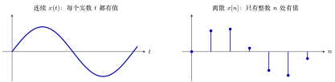
图 1 连续与离散。左：一条连续的曲线，横轴上每一点都有值；右：只在整数 \(n\) 处有值的序列（图中取的是左边那条曲线在 \(t=0,1,\dots,6\) 处的值），点与点之间没有定义，不是等于 \(0\)。
2.3 周期信号与非周期信号¶
连续：
\(T\) 取最小正周期。若 \(T\) 是周期，则 \(2T,3T,\dots\) 也都是周期，其中最小的正的那个叫基本周期。
离散：
\(N\) 必须是正整数（\(N=0\) 时「重复」没有意义）。连续与离散的定义常只给一个，另一个要自己补出来。
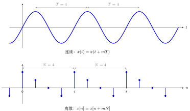
图 2 周期信号。上：连续波形每隔 \(T\) 重复一遍（图中 \(T=4\)，量相邻两个峰的距离）；下：离散序列每隔 \(N\) 个点重复一遍（图中一个周期内的四个值是 \(1,\tfrac12,0,-\tfrac12\)，\(N=4\)）。
2.4 奇信号与偶信号¶
即高中已学过的奇函数、偶函数。
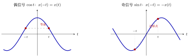
图 3 偶、奇信号。左：偶信号关于纵轴对称，\(t\) 与 \(-t\) 两点等高（红点，取 \(t=1.2\)，值都是 \(\cos1.2\approx0.36\)）；右：奇信号关于原点对称，两点高度相反（\(\sin(\pm1.2)=\pm0.93\)），两点的连线穿过原点。
2.5 偶奇分解：任何信号都能唯一分解成「偶 \(+\) 奇」¶
概念：定理¶
重点
定理。对任意信号 \(x(t)\)（定义域关于原点对称，如 \(t\in\mathbb{R}\)），存在唯一的一对信号 \(x_e(t)\)、\(x_o(t)\)，其中 \(x_e\) 是偶信号、\(x_o\) 是奇信号，使得
下标 \(e\) 取自 even，\(o\) 取自 odd。离散版本把 \((t)\) 换成 \([n]\) 即可： \(x_e[n]=\dfrac{x[n]+x[-n]}{2}\)，\(x_o[n]=\dfrac{x[n]-x[-n]}{2}\)。
证明¶
要证两件事：存在（至少有一种拆法）与唯一（至多有一种拆法）。
▸ 存在性。 把定理给出的 \(x_e,x_o\) 定义出来，验三条：
-
\(x_e\) 是偶的： \(x_e(-t)=\dfrac{x(-t)+x\bigl(-(-t)\bigr)}{2}=\dfrac{x(-t)+x(t)}{2}=x_e(t)\)。
-
\(x_o\) 是奇的： \(x_o(-t)=\dfrac{x(-t)-x(t)}{2}=-\dfrac{x(t)-x(-t)}{2}=-x_o(t)\)。
-
加起来是 \(x(t)\)： \(x_e(t)+x_o(t)=\dfrac{x(t)+x(-t)+x(t)-x(-t)}{2}=x(t)\)。
三条都成立，所以至少有一种拆法。
▸ 引理（唯一性要用到）：既是偶又是奇的信号只能是零信号。
重点
引理。若 \(f(t)\) 既是偶信号又是奇信号，则 \(f\) 是零信号（整条函数处处为 \(0\)，记作 \(f\equiv0\)；注意与「某点取值为 \(0\)」区分）。
证明。\(f\) 同时满足
两式左边相同，故右边相等：
这对每一个 \(t\) 都成立，所以 \(f\equiv0\)。\(\blacksquare\)
反之零信号确实既偶又奇（\(0=0=-0\)）；离散版本把 \(f(t)\) 换成 \(f[n]\)，证明逐字相同。
▸ 唯一性（方法 A：两种拆法相减）。 假设有两种拆法
其中 \(e_1,e_2\) 偶，\(o_1,o_2\) 奇。移项并令 \(f(t)\) 等于共同的值：
-
作为 \(e_1-e_2\)，它是偶的：\(f(-t)=e_1(-t)-e_2(-t)=e_1(t)-e_2(t)=f(t)\)；
-
作为 \(o_2-o_1\)，它是奇的：\(f(-t)=o_2(-t)-o_1(-t)=-o_2(t)+o_1(t)=-f(t)\)。
所以 \(f\) 既偶又奇，由引理 \(f\equiv0\)，即 \(e_1=e_2\)、\(o_1=o_2\)：两种拆法其实是同一种。
▸ 唯一性（方法 B：拆法被逼出来）。 也说明定理中公式的来源。设 \(x(t)=e(t)+o(t)\)，\(e\) 偶、\(o\) 奇；把 \(t\) 换成 \(-t\) 得 \(x(-t)=e(t)-o(t)\)，于是
（两式相加得 \(e\)，相减得 \(o\)）。只要拆法存在，\(e,o\) 就只能是这两个式子，唯一性得证。
存在性 \(+\) 唯一性，定理得证。\(\blacksquare\)
例 1 \(e^{t}\) 的偶奇分解 偶部 cosh、奇部 sinh
\(x(t)=e^{t}\)：\(x(-t)=e^{-t}\)，所以
即 \(e^t=\cosh t+\sinh t\)，偶部是双曲余弦，奇部是双曲正弦。
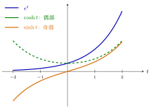
图 4 \(e^{t}=\cosh t+\sinh t\)：偶部 \(\cosh t\)（绿虚线，关于纵轴对称）与奇部 \(\sinh t\)（橙，关于原点对称）逐点相加得到蓝色的 \(e^t\)。验算：\(t=1\) 时 \(\cosh1\approx1.543\)，\(\sinh1\approx1.175\)，和 \(\approx2.718=e\)。
2.6 能量信号与功率信号¶
离散：能量是所有取值的模的平方求和，功率是在有限区间上把能量取平均；连续把求和换成积分：
-
\(E\) 有限 \(\Rightarrow\) 能量信号；
-
\(P\) 有限 \(\Rightarrow\) 功率信号。
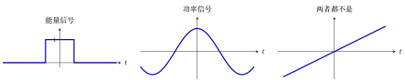
图 5 三种典型情形（区间取对称的 \([-T,T]\)，\(T\to\infty\) 看极限）。左：宽 \(2\)、高 \(1\) 的矩形脉冲，\(E=2\) 有限，是能量信号（此时 \(P=0\)）。中：\(\cos t\) 永远振荡下去，\(E=\infty\)，但平均功率 \(P=\tfrac12\) 有限，是功率信号。右：\(x(t)=t\) 越走越大，\(E=\infty\)，\(P=\infty\)，两者都不是。
3 基本的连续时间信号¶
3.1 单位阶跃信号 \(u(t)\)（教材第 10 页）¶
物理含义：电路在 \(t=0\) 接入电源，之后电压为 1，之前为 0。
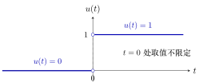
图 6 单位阶跃信号 \(u(t)\)：\(t\lt{}0\) 为 \(0\)，\(t\gt{}0\) 为 \(1\)，在 \(t=0\) 处跳变。两个空心圆表示该点的值不作规定（见下面的 \(u(0)\)）。
\(u(0)\) 可以任取：\(0\)、\(1\)、\(\tfrac12\) 乃至 \(-1\) 都行。单个点上的取值不影响积分，因而也不影响后续对 \(u(t)\) 的使用（严格理由见附录 A.6）。
3.2 冲激信号 \(\delta(t)\)（教材第 12 页）¶
概念：定义与强度¶
\(\delta(t)\) 是奇异信号（singular signal）：不是普通函数，严格定义见附录 A.3。它描述时间极短、物理量取值极大的现象：雷电、冲击力、电容经小电阻充电。
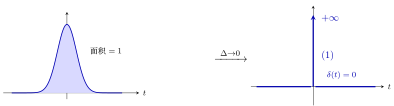
图 7 \(\delta(t)\) 的定义与直观来源。左：宽 \(\Delta\)、高 \(\sim1/\Delta\) 的窄脉冲，面积恒为 \(1\)；令 \(\Delta\to0\)，高度趋于 \(+\infty\)、宽度趋于 \(0\)，得到右图的 \(\delta(t)\)：\(t\neq0\) 处为 \(0\)（加粗横轴），\(t=0\) 处用带箭头的竖线表示；旁边 \((1)\) 是人为规定的强度 \(\int_{-\infty}^{+\infty}\delta(t)\d t=1\)，不是高度。
▸ 幅度与强度 \(\delta(t)\) 画成一根带箭头的竖线，旁边标的 1 不是高度（\(t=0\) 处高度无穷大，没有有限数值），而是强度（strength，也叫权值），即 \(\int_{-\infty}^{+\infty}\delta(t)\d t\)，也就是脉冲的「面积」。
重点
-
\(\delta(t)\)：强度 \(=1\)（称为单位冲激）。
-
\(A\,\delta(t)\)：强度 \(=A\)，即 \(\int_{-\infty}^{+\infty}A\delta(t)\d t=A\)，\(A\) 可以是任何实数（\(5\)、\(-3\) 都行）。
-
图上画 \(A\delta(t)\) 时，箭头旁边标的是 \(A\)，不是高度。
把 \(\delta(t)\) 看作窄脉冲的极限。取宽度 \(\Delta\)、高度 \(h\) 的矩形脉冲，面积 \(=\Delta\cdot h\)；强度 1 是人为约定的基准，与单位阶跃 \(u(t)\)（从 \(0\) 跳到 1）同理：先规定单位版本，其余大小乘系数。
-
要面积为 \(1\)（单位冲激的近似）：\(h=\dfrac{1}{\Delta}\)；\(\Delta=0.1\) 时高 \(10\)，\(\Delta=0.01\) 时高 \(100\)，\(\Delta\to0\) 时高 \(\to\infty\)，但面积始终是 1。
-
要面积为 \(5\)：\(h=\dfrac{5}{\Delta}\)，极限就是 \(5\delta(t)\)。
「幅度趋于无穷、面积固定」就是 \(\delta(t)\) 的含义。矩形只是为了好算；三角形、高斯曲线等窄脉冲，只要面积是 1、宽度趋于 0，也得到同一个 \(\delta(t)\)。力学类比：冲量 \(=\) 力 \(\times\) 作用时间，力趋于无穷大、时间趋于零，冲量（面积）仍是有限值。
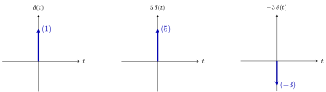
图 8 \(\delta(t)\) 的画法：一根带箭头的竖线，旁边括号里的数是强度（面积），不是高度。三张图的箭头一样长，只示意「这里有一个冲激」；强度为负时习惯把箭头朝下画。
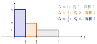
图 9 宽 \(\Delta\)、高 \(\frac1\Delta\) 的矩形脉冲：\(\Delta\) 越小，脉冲越窄越高，但面积（宽 \(\times\) 高）始终是 \(1\)。\(\Delta\to0\) 时高度趋于无穷，面积仍是 \(1\)，这就是 \(\delta(t)\)。
\(\delta(t)=\dfrac{\d u(t)}{\d t}\)：与 \(u(t)\) 的关系¶
-
积分式：\(t\lt{}0\) 时，积分区间 \((-\infty,t)\) 碰不到冲激，结果 \(0\)；\(t\gt{}0\) 时，积分区间把整个冲激包了进去，结果是它的强度 \(1\)。正好就是 \(u(t)\)。
-
求导式：\(u(t)\) 在 \(t\neq0\) 处是常数，导数为 \(0\)；在 \(t=0\) 处不连续，普通导数不存在。因此 \(\delta(t)=\frac{\d u(t)}{\d t}\) 不能作为定义式，只是 \(\delta(t)\) 与 \(u(t)\) 之间的关系。
-
这个式子应按广义导数（分布意义下的导数）理解：信号在某点有大小为 \(A\) 的向上跳变，其导数就在该点带出强度为 \(A\) 的冲激（见下面两道例题）。
-
直观理由：把阶跃的跳变拉成一小段斜坡，斜坡的斜率是（跳变量）\(/\Delta\)，也就是窄脉冲的高度，面积正是跳变量。
严格证明（广义函数意义）见附录 A.5。
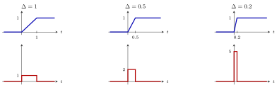
图 10 把阶跃的跳变拉成宽 \(\Delta\) 的斜坡。上排（蓝）：斜坡，在 \([0,\Delta]\) 上从 \(0\) 升到 \(1\)；下排（红）：它的导数，在 \([0,\Delta]\) 上等于斜率 \(\frac1\Delta\)，其余处为 \(0\)。\(\Delta\) 越小，导数越窄越高，面积（跳变量 \(1\)）不变，极限就是 \(\delta(t)\)。
例 1 跳变量为 5 的阶跃 导数是强度 5 的冲激
例 2 \(u(t-2)\) 的导数 平移后的单位冲激
▸ 两个常见误解
-
\(\delta(t)\) 不是普通函数，「连续、间断」这类逐点说法用不上它；它由「对别的函数做积分的结果」定义（筛选性质见附录 A.3）。
-
广义函数体系下间断点也能求导（得到 \(\delta\)），\(\delta\) 本身还能继续求导，\(\delta'(t)\) 称为冲激偶。
3.3 抽样函数 \(\Sa(t)\)（教材第 14 页，式 1.2.3）¶
概念：定义与形状¶
-
\(t=0\) 处不能直接代入（\(0/0\)），严格定义里 \(\Sa(0)=1\)，因为 \(\lim_{t\to0}\frac{\sin t}{t}=1\)。
-
偶函数：\(\sin t\) 是奇的，\(t\) 是奇的，奇除奇得偶。
-
零点：\(t=\pm\pi,\pm2\pi,\pm3\pi,\dots\)。
-
形状：中间一个主峰（高度 1），两边是振荡衰减的波，因为 \(\sin t\) 来回振荡，而分母 \(|t|\) 越来越大，把幅度压下去。
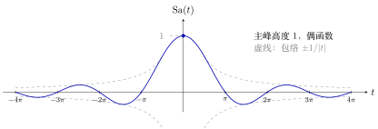
图 11 \(\mathrm{Sa}(t)=\dfrac{\sin t}{t}\)：中间主峰高 \(1\)，零点在 \(\pm\pi,\pm2\pi,\dots\)，两边振荡衰减（对应教材图 1-31）。
-
\(\dfrac{\sin\omega t}{t}\)（\(\omega\gt{}0\)）的形状与 \(\Sa(t)\) 一样，但
-
主峰高度：\(\displaystyle\lim_{t\to0}\frac{\sin\omega t}{t}=\omega\)（洛必达法则）；
-
第一个零点：\(\omega t=\pi\Rightarrow t=\frac{\pi}{\omega}\)，其余零点 \(\pm\frac{k\pi}{\omega}\)。
所以「高度乘 \(\omega\)，横向往里压缩 \(\omega\) 倍」：高度 \(\times\omega\)、宽度 \(\div\omega\)，二者相乘，面积（积分恒为 \(\pi\)）不变。
-
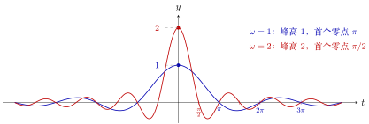
图 12 \(\dfrac{\sin\omega t}{t}\)（\(\omega\gt{}0\)）：\(\omega\) 变大，峰高按 \(\omega\) 倍升高，零点按 \(1/\omega\) 向里压缩。
概念：图解 \(\Sa(t)\) 的几个关键性质¶
下面给前面列出的性质逐条配图。
▸ 性质 1：\(\Sa(0)=1\)（为什么在 \(0\) 处要「补一个值」）。 \(t=0\) 时 \(\frac{\sin t}{t}=\frac00\)，没有意义。办法是看 \(t\to0\) 时它趋于什么。左图画出 \(\sin t\)（蓝）和直线 \(y=t\)（灰虚线）：在 \(0\) 附近两条线几乎重合（\(y=t\) 就是 \(\sin t\) 在 \(0\) 处的切线），所以两者之比 \(\frac{\sin t}{t}\to1\)。右图画 \(\Sa(t)\)：曲线逼近 \((0,1)\)，在这一点补上 \(\Sa(0)=1\)（实心点），曲线就连成一条连续的线。
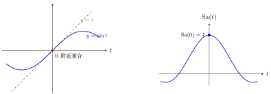
图 13 性质 1：左，\(\sin t\) 与它在 \(0\) 处的切线 \(y=t\) 几乎重合；右，因此 \(\sin t/t\to1\)，补上 \(\Sa(0)=1\)。
数值也印证这一点（\(t\) 越小，比值越接近 \(1\)）：
| \(t\) | \(1\) | \(0.5\) | \(0.1\) | \(0.01\) |
|---|---|---|---|---|
| \(\dfrac{\sin t}{t}\) | \(0.8415\) | \(0.9589\) | \(0.99833\) | \(0.999983\) |
▸ 性质 2：偶函数（奇除以奇得偶）。 \(\Sa(t)=\frac{\sin t}{t}\) 是偶函数：\(\sin t\) 与 \(t\) 都是奇函数，奇除以奇得偶。下面三张图在 \(t=a\) 与 \(t=-a\) 处各标一个点。
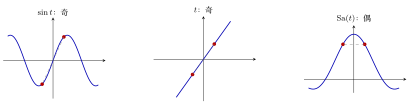
图 14 性质 2：红点是 \(t=\pm1.2\) 处的值。奇函数两点的函数值相反（虚线穿过原点），偶函数两点的函数值相等（虚线水平）。\(\sin t\) 与 \(t\) 都是奇的，相除后两个负号抵消，得到偶函数。
用式子写：\(\Sa(-t)=\dfrac{\sin(-t)}{-t}=\dfrac{-\sin t}{-t}=\Sa(t)\)。
▸ 性质 3：主瓣宽、旁瓣窄，且旁瓣一个比一个小。 \(\Sa(t)\) 的波瓣分两类：
-
主瓣：在 \([-\pi,\pi]\)，宽度 \(2\pi\)，峰高 \(1\)；
-
旁瓣：主瓣两边的波瓣，每个宽度 \(\pi\)，正负交替，峰高依次约为（数值）\(-0.217\)、\(+0.128\)、\(-0.091\)、\(+0.071\)……越来越小。
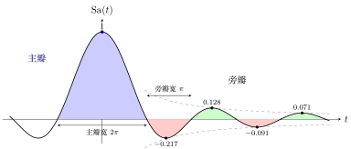
图 15 性质 3：蓝色是主瓣（宽 \(2\pi\)、峰高 \(1\)），其余是旁瓣（宽 \(\pi\)、正负交替），黑点标出各旁瓣的峰值，灰色虚线是包络 \(\pm1/|t|\)。
-
第一个旁瓣峰高 \(-0.217\)，约是主瓣的 \(\frac15\)，即 \(20\log_{10}0.217\approx-13.3\ \mathrm{dB}\)。
-
旁瓣峰值恰好落在 \(t=\tfrac{3\pi}{2},\tfrac{5\pi}{2},\dots\) 的附近，但不精确等于它们：真正的位置是方程 \(\tan t=t\) 的解（\(4.493,\ 7.725,\ 10.904,\dots\)），比 \(\frac{3\pi}2=4.712\) 等略小一些，原因是 \(\sin t\) 的峰要被分母 \(t\) 一压，峰就往左偏。
-
峰值被 \(\pm\frac1{|t|}\) 夹住（虚线），所以越往外越小，衰减得很慢（反比于 \(|t|\)），不是指数衰减。
结论：三个积分公式（重点）¶
重点
这三个公式在第三章推导傅里叶变换时会反复用到。
▸ 图解三个公式 公式 1：整条线上的面积是 \(\pi\)。积分的几何意义是「曲线和横轴之间的面积」，横轴上方的部分算正，下方的部分算负。\(\Sa(t)\) 的波瓣一正一负交替出现，所以总面积是「正面积减去负面积」。
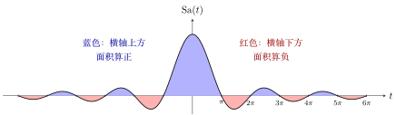
图 16 公式 1：\(\displaystyle\int_{-\infty}^{+\infty}\frac{\sin t}{t}\d t=\pi\)。蓝色面积减去红色面积，净面积 \(=\pi\approx3.14\)。
\(\Sa(t)\) 的波瓣越往外越小，但并不是「小到可以忽略」。看波瓣的累积面积（数值计算，把 \([-X,X]\) 上的面积算出来）：
| 积分范围 | 只含主瓣 | 再加第 2 对（负） | 再加第 3 对（正） | \([-40\pi,40\pi]\) |
|---|---|---|---|---|
| 累积面积 | \(3.70\) | \(2.84\) | \(3.35\) | \(3.13\) |
累积面积在 \(\pi\approx3.1416\) 上下来回摆动，摆幅越来越小，最后收敛到 \(\pi\)。这就是后面「收敛性与严格性」里说的「条件收敛」的几何样子：主瓣单独就有 \(3.70\)，比 \(\pi\) 大，后面的负波瓣把它拉回来，正波瓣再拉上去，如此反复，才逼近 \(\pi\)。（上表由数值积分得到，主瓣面积 \(2\,\mathrm{Si}(\pi)\approx3.704\)。）
把累积面积画成曲线。上表只有四个点，下面把整个过程画出来：横轴是积分范围 \([-X,X]\) 的 \(X\)，纵轴是这个范围内的净面积 \(A(X)\)。
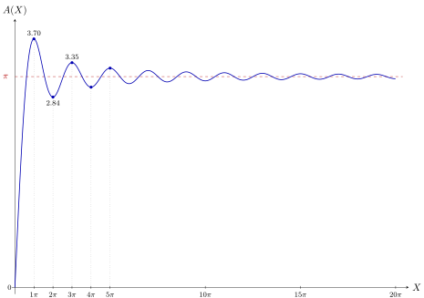
图 17 累积面积 \(A(X)=\displaystyle\int_{-X}^{X}\frac{\sin t}{t}\d t=2\int_0^X\frac{\sin t}{t}\d t\) 随 \(X\) 的变化。曲线在 \(\pi\) 上下来回摆动，极值出现在 \(X=k\pi\)（即 \(\Sa(t)\) 的零点，此处面积刚好「转向」），摆幅越来越小，最终收敛到 \(\pi\)。
读图的要点：
-
\(A(X)\) 在 \(X=k\pi\) 处取极值：\(k\) 为奇数时是局部最大（刚好把一个正波瓣加进来），\(k\) 为偶数时是局部最小（刚好把一个负波瓣加进来）。数值是 \(3.70,\ 2.84,\ 3.35,\ 2.98,\ 3.27,\dots\)，围绕 \(\pi\) 上下摆动。
-
每多加一个波瓣，面积改变的量就变小一点，所以摆幅越来越小。收敛的原因是「摆幅趋于 \(0\)」，而不是「每个波瓣面积趋于 \(0\) 后就可以丢掉」，这正是条件收敛的图像。
-
第一个峰值 \(3.70\) 比 \(\pi\) 高出约 \(18\%\)（\(3.70/3.14\approx1.18\)）。这个超出量叫做过冲（overshoot）。（同一个数 \(\mathrm{Si}(\pi)\approx1.852\) 也会出现在傅里叶级数的吉布斯现象中。）
（曲线由 \(2\int_0^X\frac{\sin t}{t}\d t\) 在 \(X\in[0,20\pi]\) 上每隔 \(0.1\) 采样连成。）
公式 2：半条线上的面积是 \(\pi/2\)。\(\Sa(t)\) 是偶函数，图像关于纵轴镜像对称，所以左右两半的面积完全一样，各占总面积的一半。
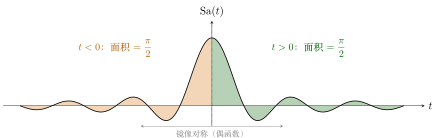
图 18 公式 2：\(\displaystyle\int_0^{+\infty}\frac{\sin t}{t}\d t=\int_{-\infty}^{0}\frac{\sin t}{t}\d t=\frac{\pi}{2}\)。左右两半镜像对称，各占一半。
公式 3：\(\displaystyle\int_{-\infty}^{+\infty}\frac{\sin\omega t}{t}\d t=\pi\)（\(\omega\gt{}0\)）。\(\omega\) 变大，曲线变得又高又窄（峰高 \(\omega\)，宽度 \(\propto1/\omega\)），两个效果一乘，面积保持不变，还是 \(\pi\)。下图左右两张，\(\omega=1\) 和 \(\omega=3\)，横纵比例相同，可以直接比较。
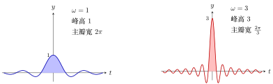
图 19 公式 3：\(\omega\) 从 \(1\) 变成 \(3\)，峰高变成 \(3\) 倍，主瓣宽度变成 \(1/3\)，面积不变。阴影是主瓣；整条曲线下的净面积都是 \(\pi\)。
这也是下面「三个公式之间的关系」里用变量代换证明的几何版本：横轴压缩 \(\omega\) 倍，纵轴拉高 \(\omega\) 倍，面积不变。
证明：三个公式之间的关系¶
-
整条线 \(\leftrightarrow\) 半条线：\(\frac{\sin t}{t}\) 是偶函数，图像关于纵轴对称，所以 \(0\) 右边和 \(0\) 左边的积分相等，各占一半：\(\pi/2\)。
-
\(\omega\) 的版本：令 \(s=\omega t\)（\(\omega\gt{}0\) 保证积分上下限不变号），则 \(t=s/\omega\)，\(\d t=\d s/\omega\)：
\[ \int_{-\infty}^{+\infty}\frac{\sin\omega t}{t}\d t =\int_{-\infty}^{+\infty}\frac{\sin s}{s/\omega}\cdot\frac{\d s}{\omega} =\int_{-\infty}^{+\infty}\frac{\sin s}{s}\d s=\pi \]\(\omega\) 约掉了。
证明 \(\displaystyle\int_0^{+\infty}\frac{\sin t}{t}\d t=\frac{\pi}{2}\)（参数求导法）¶
说明
教材上的证明要用复变函数；下面给出一个不用复变函数的初等证明。
思路：直接积 \(\frac{\sin t}{t}\) 积不出来（原函数不是初等函数）。于是在积分里人为添一个衰减因子 \(e^{-at}\)，把问题变成「含参数 \(a\) 的积分」，对 \(a\) 求导，导数是好积的，最后让 \(a\to0\) 把因子去掉。
第 1 步：设
想要的是 \(I(0)\)。
这个新加的因子 \(e^{-at}\) 是整个证明的「杠杆」，先看清它长什么样（\(t\ge0\)）：
-
\(a=0\) 时 \(e^{-0\cdot t}=1\)：不衰减，\(I(0)\) 就是原来要求的积分；
-
\(a\gt{}0\) 时 \(e^{-at}\) 随 \(t\) 增大而衰减，\(a\) 越大，衰减越快；
-
\(a\to+\infty\) 时，除了 \(t=0\) 附近，整条曲线都被压成 \(0\)。第 5 步就是用这一点定出常数 \(C\)。
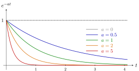
图 20 衰减因子 \(e^{-at}\)（\(t\ge0\)）：\(a=0\) 时恒为 \(1\)；\(a\) 越大衰减越快，\(a\to+\infty\) 时整条曲线被压向 \(0\)。
\(a\gt{}0\) 时，这个因子还保证被积函数 \(\frac{\sin t}{t}e^{-at}\) 在 \(t\to+\infty\) 处快速衰减，积分一定收敛。
第 2 步：对 \(a\) 求导（把求导放进积分号，\(\frac{\partial}{\partial a}e^{-at}=-t\,e^{-at}\)，正好把分母的 \(t\) 消掉）：
第 3 步：用欧拉公式(Euler’s formula) \(\sin t=\dfrac{e^{jt}-e^{-jt}}{2j}\)：
（这里 \(a\gt{}0\) 保证 \(e^{-(a\mp j)t}\to0\)，积分才收敛。也可把负号并进括号里，写成 \(\frac{1}{2j}\bigl[\frac{1}{a+j}-\frac{1}{a-j}\bigr]\)，通分后分母 \(a^2-j^2=a^2+1\)、分子 \(-2j\)，结果一样。）
第 4 步：积分求 \(I(a)\)：
第 5 步：用 \(a\to+\infty\) 定常数 \(C\)。\(a\) 很大时 \(e^{-at}\) 把整个被积函数压成 \(0\)，所以 \(I(+\infty)=0\)：
第 6 步：令 \(a\to 0\)：
再由偶函数得 \(\int_{-\infty}^{+\infty}\frac{\sin t}{t}\d t=2\cdot\frac\pi2=\pi\)。
（第 2 步「求导进积分号」与第 6 步 \(a\to0^{+}\) 时的极限需要论证收敛性，见下面「收敛性与严格性」。）
收敛性与严格性¶
说明
下面逐项检查上面证明中每一步的合法性，用的是微积分里的标准做法。
证明里用到五件事，逐个检查。记 \(F(t)=\displaystyle\int_t^{+\infty}\frac{\sin s}{s}\d s\)（尾巴）。
▸ （1）\(\displaystyle\int_0^{+\infty}\frac{\sin t}{t}\d t\) 本身是收敛的。 \(t=0\) 附近没有问题：\(\bigl|\frac{\sin t}{t}\bigr|\le1\)。问题在 \(t\to+\infty\)。对 \(R\gt{}1\) 做分部积分：
\(R\to\infty\) 时，\(\frac{\cos R}{R}\to0\)；\(\bigl|\frac{\cos t}{t^2}\bigr|\le\frac{1}{t^2}\)，而 \(\int_1^\infty\frac{1}{t^2}\d t\) 有限，所以最后一项也有极限。因此极限存在，积分收敛。
但它只是「条件收敛」，不是「绝对收敛」：在每个区间 \([k\pi,(k+1)\pi]\) 上，\(\int\frac{|\sin t|}{t}\d t\ge\frac{1}{(k+1)\pi}\int|\sin t|\d t=\frac{2}{(k+1)\pi}\)，把这些加起来像调和级数 \(\sum\frac1k\) 一样发散，所以 \(\int_0^\infty\frac{|\sin t|}{t}\d t=+\infty\)。意思是：它收敛，靠的是正负波瓣相互抵消，而不是靠波瓣越来越小直至可以忽略。这个区别是下面第（5）条为什么要多费一点力气的原因。
▸ （2）对 \(a\gt{}0\)，\(I(a)\) 有意义。 \(\bigl|\frac{\sin t}{t}e^{-at}\bigr|\le e^{-at}\)，而 \(\int_0^\infty e^{-at}\d t=\frac1a\) 有限，所以绝对收敛。
▸ （3）第 2 步「求导放进积分号」对 \(a\gt{}0\) 成立。 取任意 \(a_0\gt{}0\)。对所有 \(a\ge a_0\)：
右边与 \(a\) 无关，并且 \(\int_0^\infty e^{-a_0t}\d t=\frac1{a_0}\) 有限。有这样一个「共同的、可积的上界」，微积分里「积分号下求导」的定理就成立。所以 \(I'(a)=-\frac1{a^2+1}\) 对每个 \(a\gt{}0\) 成立，再积分得 \(I(a)=-\arctan a+C\)（\(a\gt{}0\)，\(C\) 是常数）。
▸ （4）第 5 步 \(I(+\infty)=0\) 的严格理由。 \(|I(a)|\le\int_0^\infty e^{-at}\d t=\frac1a\to0\)（\(a\to+\infty\)），所以 \(\lim_{a\to+\infty}I(a)=0\)。代入 \(I(a)=-\arctan a+C\)，得 \(0=-\frac\pi2+C\)，\(C=\frac\pi2\)，即对所有 \(a\gt{}0\)：\(I(a)=\frac\pi2-\arctan a\)。
▸ （5）第 6 步 \(a\to0^{+}\) 时 \(I(a)\to I(0)\)：最需要小心的一步。 我们已经知道 \(I(a)=\frac\pi2-\arctan a\)（\(a\gt{}0\)），所以 \(\lim_{a\to0^+}I(a)=\frac\pi2\)。要得到的是 \(I(0)=\int_0^\infty\frac{\sin t}{t}\d t=\frac\pi2\)，需要证明 \(\lim_{a\to0^+}I(a)=I(0)\)。
因为（1）说过 \(\int\frac{\sin t}{t}\d t\) 只是条件收敛，不能用「被积函数有可积的上界，极限可以放进积分号」这类绝对收敛下的办法（这里找不到那个上界）。换一种办法：用尾巴 \(F(t)\)。
\(F\) 连续，\(F(0)=I(0)\)，\(F(t)\to0\)（\(t\to\infty\)，因为是收敛积分的尾巴），\(F'(t)=-\frac{\sin t}{t}\)，并且 \(F\) 有界，设 \(|F|\le M\)。于是对 \(a\gt{}0\) 做分部积分：
（边界项：\(t\to\infty\) 时 \(F(t)e^{-at}\to0\)。）接下来证明最后一项 \(\to0\)。任给 \(\varepsilon\gt{}0\)，选 \(T\) 使得 \(t\gt{}T\) 时 \(|F(t)|\lt{}\varepsilon\)，则
令 \(a\to0^+\)，右边 \(\to\varepsilon\)。\(\varepsilon\) 是任意的，所以这一项趋于 \(0\)，于是 \(I(a)\to F(0)=I(0)\)。
▸ 合起来。 \(I(0)=\lim_{a\to0^+}I(a)=\lim_{a\to0^+}\bigl(\frac\pi2-\arctan a\bigr)=\frac\pi2\)。证明因此是严格的。五个检查点里，（1）（5）是真正需要费力的，因为这个积分只是条件收敛；（2）（3）（4）都靠 \(e^{-at}\) 的衰减，这也是「人为加入衰减因子」这一做法有效的原因：它让积分在 \(a\gt{}0\) 时变成绝对收敛，把棘手的部分推到了最后一步 \(a\to0^+\)。
3.4 \(\Sa(t)\) 的傅里叶变换¶
说明
傅里叶变换属于第三章的内容，这里先给出 \(\Sa(t)\) 的频谱，说明前面三个积分公式的用途。符号约定（不同教材 \(2\pi\) 的位置可能不同）：
▸ 直观含义。 傅里叶变换把一个信号拆成「各个频率的成分各有多少」。\(\Sa(t)\) 的拆法特别规整：频率低于 \(1\) 的成分一样多（高度 \(\pi\)），频率高于 \(1\) 的成分一点也没有。画出来是一个方方正正的矩形。
▸ 结论。
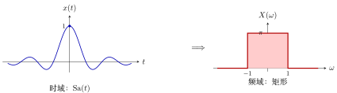
图 21 \(\Sa(t)\) 与它的傅里叶变换。左边是一串振荡衰减的波，右边是方方正正的矩形（高 \(\pi\)、宽 \(2\)）。矩形的两条边 \(\omega=\pm1\) 处的值取多少不影响结果（通常取中点 \(\pi/2\)），原因和 \(u(0)\) 可以任取一样。
▸ 验算：用逆变换（不必计算傅里叶积分）。 反过来做：已知频谱是上面的矩形，用逆变换把它变回时域，看是不是 \(\Sa(t)\)。
用到了欧拉公式 \(e^{jt}-e^{-jt}=2j\sin t\)。得到 \(\Sa(t)\)，说明这个矩形就是它的频谱。
▸ 与三个积分公式的关系。 傅里叶变换在 \(\omega=0\) 处的值，就是把整个信号加起来：\(X(0)=\int_{-\infty}^{+\infty}x(t)\d t\)。所以
-
公式 1 \(\displaystyle\int_{-\infty}^{+\infty}\frac{\sin t}{t}\d t=\pi\)，意思是矩形频谱的高度是 \(\pi\)；
-
公式 3 \(\displaystyle\int_{-\infty}^{+\infty}\frac{\sin\omega_0t}{t}\d t=\pi\)（\(\omega_0\gt{}0\)），意思是：时域那个 \(\frac{\sin\omega_0t}{t}\) 的频谱是高 \(\pi\)、宽 \(2\omega_0\) 的矩形（边在 \(\pm\omega_0\)），不管 \(\omega_0\) 多大，高度都是 \(\pi\)，变的只是宽度；
-
公式 2（半条线 \(\pi/2\)）只是公式 1 的一半（偶函数使左右对称），在频谱上没有单独的几何对应。
这就是三个公式在第三章反复出现的原因：它们给出 \(\Sa\) 的频谱形状。
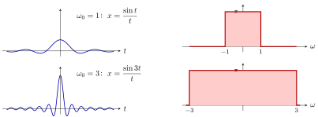
图 22 公式 3 的图解：左列是时域，右列是频谱。\(\omega_0\) 从 \(1\) 增大到 \(3\)，时域曲线变得又高又窄（峰高 \(\omega_0\)），频谱的矩形变得更宽（宽 \(2\omega_0\)），高度始终是 \(\pi\)。
▸ 规律：时域窄，频域宽。 上图说明，一个信号在时间上挤得越窄、越尖，它占据的频率范围就越宽，反之亦然。这条规律（时间和频率不能同时都窄）在整门课里反复出现。
▸ 为什么 \(\Sa(t)\) 重要。 一个理想低通滤波器，把低于截止频率的成分原样放过、高于截止频率的全部去掉，它的频率响应就是上面那个矩形，它对应的时域响应就是 \(\Sa\) 形状的曲线。后面讲采样和信号重建时，\(\Sa(t)\) 会一再出现。
▸ 局限与注意事项。
-
\(\Sa(t)\) 从 \(-\infty\) 延伸到 \(+\infty\)，实际中做不出来（不可实现）。
-
前面证明过它不是绝对可积（条件收敛），所以它的傅里叶变换积分也只在条件收敛的意义下成立，这是矩形频谱边缘处值不确定的原因之一。
-
记号约定不同的书，\(2\pi\) 出现的位置不同，但「时域 \(\Sa\) \(\leftrightarrow\) 频域矩形」这个结论不变。
4 基本的离散时间信号（教材第 15 页起）¶
4.1 单位脉冲序列 \(\delta[n]\)¶
称为单位脉冲序列(unit impulse sequence)：横轴是 \(n\)，\(n=0\) 处为 \(1\)，其余整数处为 \(0\)。
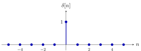
图 23 单位脉冲序列 \(\delta[n]\)：只在 \(n=0\) 处等于 \(1\)，其余整数处全为 \(0\)。与连续的 \(\delta(t)\) 不同，这里每个点都有确定的有限值，没有「无穷大」。
4.2 单位阶跃序列 \(u[n]\)¶
\(n=0,1,2,\dots\) 处都是 \(1\)，一直向右延伸；\(n\lt{}0\) 处全是 \(0\)。
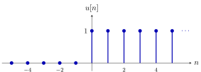
图 24 单位阶跃序列 \(u[n]\)：\(n\ge0\) 时全为 \(1\)，\(n\lt{}0\) 时全为 \(0\)。与连续的 \(u(t)\) 不同，离散的 \(u[0]\) 有明确的值 \(1\)，不需要「任取」。
4.3 连续与离散的四个信号对照¶
| 连续（圆括号） | 离散（方括号） | |
|---|---|---|
| 冲激 | \(\delta(t)\)：奇异，\(t=0\) 处无穷大 | \(\delta[n]\)：普通，\(n=0\) 处等于 1 |
| 阶跃 | \(u(t)\)：\(t\gt{}0\) 为 1，\(u(0)\) 任意 | \(u[n]\)：\(n\ge0\) 为 1 |
\(\delta(t)\) 和 \(\delta[n]\) 不是一回事，不要混淆：\(\delta[n]\) 是普通信号（\(n=0\) 处为 1，其余为 0）；\(\delta(t)\) 是奇异信号，第二章才严格定义。区分办法见前面「圆括号连续、方括号离散」的规则。
A 附录：广义函数（generalized function）的说明¶
说明
本附录用分布论（distribution theory）的标准结论，解释正文里「\(\delta(t)\) 不是普通函数」「\(u(t)\) 在 \(0\) 处不可导却有导数」「\(u(0)\) 可以任取」这几句话；课程内的严格定义见第二章。
A.1 第一步：为什么普通函数这套说法不够用¶
普通函数的想法是：给我一个 \(t\)，我告诉你函数值。\(\delta(t)\) 想描述的是「一个极短、极强的冲击」，在 \(t=0\) 处它的值是「无穷大」，而无穷大不是一个数，所以按「每点一个值」的办法，根本没法把 \(\delta(t)\) 写成一个函数。
但这个冲击有一件事是确定而有限的：它对别的东西产生的总效果。比如一个力的冲量（作用的总量），或者它去「抽取」另一个信号在某一点的值。数学家的办法是：不去问它每点的值，只问它的总效果。
A.2 第二步：测试函数（test function）——用来「试探」的工具¶
先准备一类很乖的函数，叫测试函数 \(\varphi(t)\)：
-
无穷次可导（非常光滑，没有尖角、没有跳变）；
-
在某个有限区间之外恒等于 \(0\)（像一个光滑的小山丘，两头平坦落地）。
它的作用像一把「探针」：用它去碰一碰广义函数，看反应。
A.3 第三步：广义函数 \(=\) 一台「输入探针、输出一个数」的机器¶
广义函数就是一台机器：你把一个测试函数 \(\varphi\) 放进去，它吐出一个数，记作 \(\langle T,\varphi\rangle\)。（严格定义还要求这台机器是线性的，并且「探针变化很小则输出变化也很小」（连续性）。）
重点
-
\(\delta\) 这台机器的规则：输入 \(\varphi\)，输出 \(\varphi\) 在 \(0\) 点的值：\(\langle\delta,\varphi\rangle=\varphi(0)\)。
-
这就是筛选性质：\(\delta\) 像一个筛子，把 \(\varphi\) 在 \(0\) 处的值「筛」出来。
-
普通函数 \(f(t)\) 也能当一台机器：规则是 \(\varphi\mapsto\int_{-\infty}^{+\infty}f(t)\varphi(t)\d t\)。所以普通函数是广义函数的特例，广义函数是普通函数的推广。
\(\delta\) 之所以叫奇异的（singular），就是因为没有任何普通函数能产生「\(\varphi\mapsto\varphi(0)\)」这台机器。
A.4 第四步：为什么说 \(\delta\) 是窄脉冲的「极限」¶
正文里用宽 \(\Delta\)、高 \(1/\Delta\) 的矩形脉冲 \(\delta_\Delta(t)\) 来想象 \(\delta(t)\)。现在可以说清楚这个极限是什么意思了：
（\(\Delta\) 很小时，\(\varphi\) 在 \((0,\Delta)\) 上几乎就是常数 \(\varphi(0)\)，取平均就得到 \(\varphi(0)\)。）
这叫弱收敛：不是「每一点的函数值收敛」，而是「放进每一个探针，输出都收敛」。逐点看，\(\delta_\Delta(0)\) 是 \(1/\Delta\to\infty\) 的，根本不收敛；但用探针一试，它收敛得很好。这也解释了为什么换成三角形、高斯曲线等别的窄脉冲，只要面积是 \(1\)、宽度趋于 \(0\)，结果都一样：探针看到的只是「面积 \(1\)、集中在 \(0\)」这件事。
A.5 第五步：广义导数——解释 \(\delta(t)=\dfrac{\d u(t)}{\d t}\)¶
先看普通函数。对光滑的 \(f\)，用分部积分（探针在两头为 \(0\)，边界项消失）：
也就是说：把导数从 \(f\) 身上「转移」到探针 \(\varphi\) 身上，只多一个负号。右边的写法即使 \(f\) 本身不可导也有意义（只要 \(f\) 能积分）。于是数学家规定：
这就是广义导数的定义。好处是：任何广义函数都能求导，而且可以求无限次。
现在算 \(u(t)\) 的广义导数（即「不能作为定义式」背后的严格版本）：
（用到了 \(u(t)\) 只在 \(t\gt{}0\) 取 \(1\)，以及 \(\varphi\) 在远处为 \(0\)。）所以 \(u'=\delta\) 在广义函数的意义下严格成立，不是工程上的近似。「不能作为定义式」是因为：这个等式要先有「广义导数」这套规则才有意义，而 \(\delta\) 的定义本身（A.3 的筛选规则）不依赖它。
用同样的办法：
-
冲激偶（doublet）\(\delta'(t)\)：\(\langle\delta',\varphi\rangle=-\langle\delta,\varphi'\rangle=-\varphi'(0)\)，它「筛出」的是探针在 \(0\) 处的导数（带负号）。
-
一个信号在 \(t_0\) 处有向上跳变 \(A\)，它的广义导数 \(=\) 普通导数（\(t\neq t_0\) 处的斜率）\(+\ A\,\delta(t-t_0)\)。正文里的 \(5\delta(t)\)、\(\delta(t-2)\) 都是它的特例。
A.6 第六步：为什么 \(u(0)\) 可以取任意值¶
广义函数是靠「积分的结果」来识别的。如果两个普通函数只在一个点（或有限个点）上不同，那么对任何探针 \(\varphi\)，\(\int f\varphi\d t\) 的结果完全一样，因为一个点的「宽度」是零，对积分没有贡献。所以这两个函数产生的是同一台机器，也就是同一个广义函数。
\(u(0)\) 取 \(0\)、\(\tfrac12\)、\(1\) 甚至 \(-1\)，只改变了 \(t=0\) 这一个点的值，机器完全不变，所以信号与系统里它是「可以任取」的。
反过来，这也说明了一个重要的限制：广义函数没有「某一点的值」这回事。问「\(\delta(0)\) 等于几」本身就是没意义的问题，正文里写的「\(t=0\) 处为 \(+\infty\)」只是帮助想象的说法。
A.7 使用上的限制¶
-
没有点值：见上，不能问 \(\delta(t_0)\) 是多少。
-
不能随便相乘：\(\delta(t)\cdot\delta(t)\) 没有意义（两个广义函数一般不能相乘）。但「广义函数 \(\times\) 光滑函数」是可以的，比如 \(f(t)\delta(t)=f(0)\delta(t)\)（\(f\) 光滑），这是筛选性质的另一种写法。
-
「连续、间断」这类说法用不上：这是逐点的概念，而广义函数不逐点定义。
A.8 普通函数与广义函数对照¶
| 普通函数 | 广义函数 | |
|---|---|---|
| 怎么定义 | 每个点给一个值 | 作用在探针 \(\varphi\) 上给一个数 |
| \(\delta\) 怎么描述 | 无法描述（\(+\infty\) 不是数） | \(\varphi\mapsto\varphi(0)\) |
| 导数 | 要求连续、可导 | 转移到探针上，总是存在，可无限次求导 |
| 单点的值 | 有，且影响函数本身 | 没有，改一个点不影响 |
所以：\(\delta(t)=\frac{\d u}{\d t}\) 是严格成立的，只不过是在广义函数的意义下；\(\delta\) 的「无穷大」是想象的拐杖，真正的定义是筛选性质。